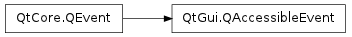

QAccessibleEvent ¶

Detailed Description ¶
The PySide.QtGui.QAccessibleEvent class is used to query addition accessibility information about complex widgets.
The event can be of type QEvent.AccessibilityDescription or QEvent.AccessibilityHelp .
Some QAccessibleInterface implementations send QAccessibleEvents to the widget they wrap to obtain the description or help text of a widget or of its children. The widget can answer by calling PySide.QtGui.QAccessibleEvent.setValue() with the requested information.
The default QWidget.event() implementation simply sets the text to be the widget’s tooltip (for AccessibilityDescription event) or its "What's This?" text (for AccessibilityHelp event).
- class PySide.QtGui. QAccessibleEvent ( type , child ) ¶
-
Parameters: - child – PySide.QtCore.int
- type – PySide.QtCore.QEvent.Type
Constructs an accessibility event of the given type , which must be QEvent.AccessibilityDescription or QEvent.AccessibilityHelp .
child is the (1-based) index of the child to which the request applies. If child is 0, the request is for the widget itself.
- PySide.QtGui.QAccessibleEvent. child ( ) ¶
-
Return type: PySide.QtCore.int Returns the (1-based) index of the child to which the request applies. If the child is 0, the request is for the widget itself.
- PySide.QtGui.QAccessibleEvent. setValue ( aText ) ¶
-
Parameters: aText – unicode Set the description or help text for the given PySide.QtGui.QAccessibleEvent.child() to text , thereby answering the request.
- PySide.QtGui.QAccessibleEvent. value ( ) ¶
-
Return type: unicode Returns the text set using PySide.QtGui.QAccessibleEvent.setValue() .